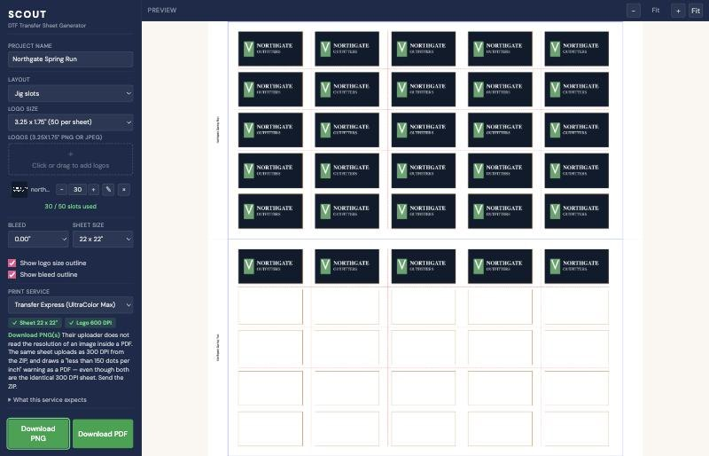
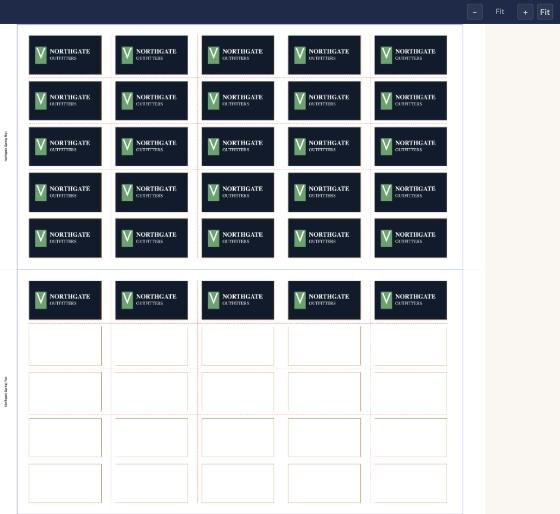
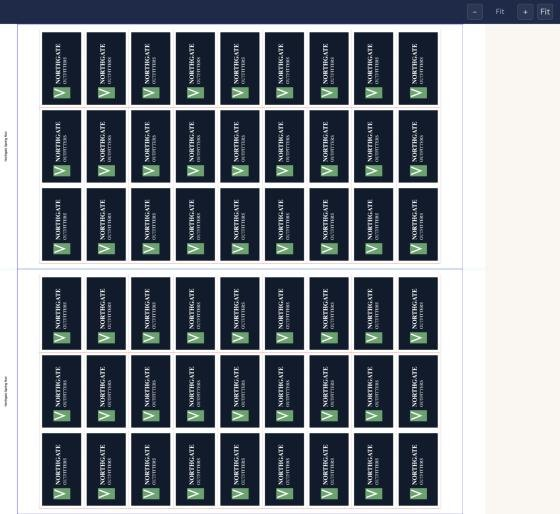

Arranges your logos onto a print-ready sheet for the heatpress, with the registration marks and jig outlines already in the right places.
wallaby101.github.io/scouttransfertoolNothing to install. Your logo files never leave your computer, and it keeps working if the internet drops.
Printed small in the sheet margin and used for the file name. The download buttons stay greyed out until you fill it in.
3 × 3″ or 3.25 × 1.75″. If you are not sure, leave it on 3 × 3.
A PNG with a transparent background gives the best result. JPEGs work, but anything transparent in them comes out white.
Use − and +, or click the number and type it. The counter below shows how much of the sheet you have filled.
Check the printer panel is green, then click Download PNG. That is the file you send.

1 2 3 4 5Pick your printer under Print Service and the tool checks your sheet against that company’s published limits. It always shows what it measured, so a quiet check is not a broken one.
Both green. Nothing between you and the download.
The download greys out and a red box explains why, with a button that fixes it.
This one cost a real job. Transfer Express accept an uploaded file up to 22 × 22″. Send a 22 × 24″ sheet and they do not refuse it — they shrink the whole thing to fit.
A 3″ label prints at 2.75″, and the jig does not line up. Nothing on their page says they changed your file — it just shows the new size.
The download greys out and a Switch to 22 × 22″ button changes the setting for you.
They do sell a 24 × 22″ gang sheet, but only if you build it inside their own online designer. A file you upload is always treated as a single image, and their maximum single image is 22 × 22″.
The identical sheet uploads as 300 DPI when you send the PNG, and draws a “less than 150 dots per inch” warning as a PDF. Both files are the same 300 DPI sheet.
The app outlines the button to use in green. The PDF is still the easier file to look over on screen before committing film — just do not upload it.
| Job | Button | What lands |
|---|---|---|
| One sheet | Download PNG | Northgate Spring Run_sheet1.png |
| Several sheets | Save PNGs to Folder | You pick a folder; each sheet is written into it as its own PNG |
| Several, older browser | Download PNGs (ZIP) | Northgate Spring Run_sheets.zip |
Every file is 300 DPI with a transparent background, which is what DTF film needs. Transfer Express take one file per upload slot, so a multi-sheet job means uploading each PNG separately either way.


| Logo size | Jig slots | Packed | Gain |
|---|---|---|---|
| 3 × 3″ | 30 | 36 | +6 |
| 3.25 × 1.75″ | 50 | 54 | +4 |
Use jig slots for normal jobs. Use packed when you are cutting the transfers out by hand and want more on each sheet of film.
Gap is the space between logos and around the edge of each jig half. Type it in inches; 0.25 is a sensible start. Underneath, the tool tells you what that gap buys — 54 per sheet, 9 × 3 per jig half, turned sideways to fit more — and updates as you type.
Click the ✎ button in a logo’s row. Everything in the editor affects that one logo, on every copy of it.
Scale — 100% fills as much of the label as it can without cropping. Past 100% crops the edges.
Rotate — any angle, or quarter turns. The logo is always re-fitted after turning, so nothing is cut off.
The six arrows push the logo to an edge; the dot re-centres it. You can also drag it on the picture.
Background is transparent by default. Pick a colour to print a solid block behind the logo instead.
Click + Add Text to set the font, size, colour and
position. You do not type your words here —
{{name}} in the preview is a placeholder and never prints.
Type the actual words in the Variable Data panel on the left, comma-separated, then click Apply. One value per label; the counter turns green when you have enough.
Tick Same text on every label to type one word for all of them. Commas stay intact, so Smith, Jr. survives as one name.
Styling the text is not enough. If the Variable Data box is empty, no text is printed at all and nothing warns you on the sheet itself. Check the counter reads green before you download.
| What you see | What to do |
|---|---|
| Download buttons greyed out | Usually no project name. Fill it in at the top left. |
| × Sheet 22 x 24″ | Click Switch to 22 × 22″ in the red box. |
| Orange 200 DPI — slightly soft under a logo | Ask for the logo again at the pixel size shown, or turn the scale down. |
| Need 6 values, have 0 in red | Add one value per label in Variable Data and click Apply. |
| A white block behind the logo | The file is a JPEG, which cannot be transparent. Re-export as PNG. |
| Text on the labels is invisible | The text colour matches what is behind it. Pick a darker colour. |
| Logo cut off at the edges | Scale is above 100%. Open the editor and click Reset. |
| Anything else odd | Close the window and open it again. Nothing is kept between sessions. |
| Label size | Ask for |
|---|---|
| 3 × 3″ | 900 × 900 pixels |
| 3.25 × 1.75″ | 975 × 525 pixels |
Bigger is fine — the tool scales it down cleanly. Smaller is what causes soft edges. Below 150 DPI, Transfer Express’s printer adds a white jagged line around the artwork.
A small dark bar appears at the bottom of the window saying A new version is ready. There is nothing to download and nothing to install.
If you are mid-job, finish it and download your sheets first. The version you are using carries on working exactly as it was. Your logos and settings are not kept across a reload.
Two limits worth knowing: 500 labels per job, and a project name is required before anything will download.